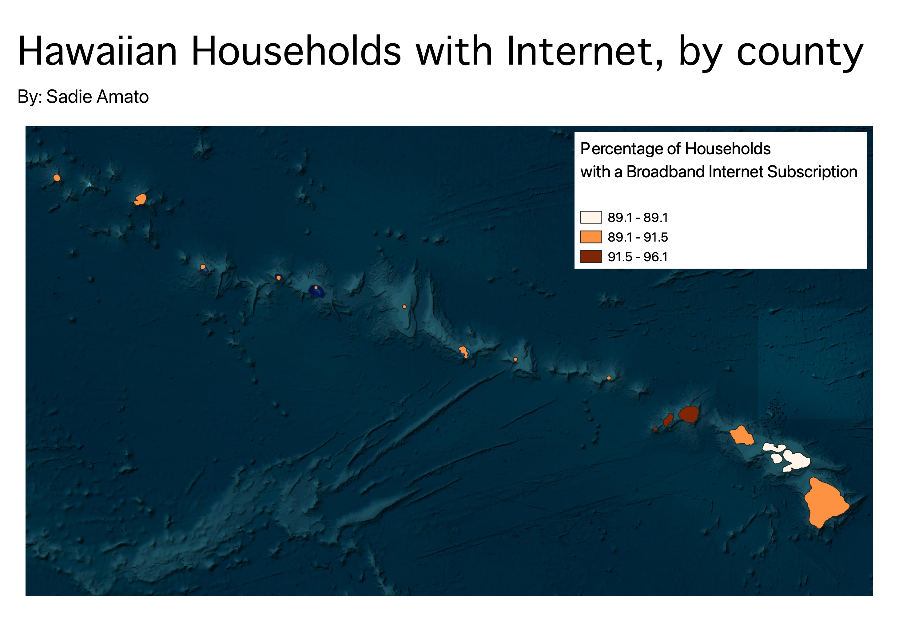

Homework 6: Census data choropleth
Sadie Amato
This choropleth map displays the range of household broadband Internet access across different counties in Hawaii.
Reliable Internet access at home can be an important indicator for measures of success in a household, so I found
this variable to be interesting to examine.
We can see that the highest percentage of households with Internet in a given county is 96.1%,
and the lowest percentage is 89.1%. Kauai county has the highest percentage of households with Internet.
For future analysis, it would be interesting to study how this variable relates to other variables such as population
density, mean household income, or education level.

Data used for this project
CSV dataset
Link to shapefile of HI counties